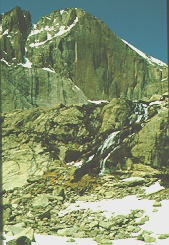

Longs Peak: The Diamond
The pinnacle
of climbing in Rocky Mountain National Park, the Diamond starts at 13,100
feet and rises nearly 1000 vertical feet to the upper slopes of Longs Peak.
The left side of the Diamond offers several different routes, none easier
than 5.10 (extreme difficulty.) The right half of the Diamond is primarily
used by aid climbers. Due to the strenuous nature of the Diamond, all participants
will have to pass a physical examination and climbing evaluation.
Difficulty Level: Expert
Time: Two days
Physical stress: Extreme